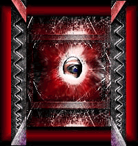

Volume 2 Number 2
EDITOR'S NOTE
Switch, in this issue, examines online interactive
narrative. Virtual environments or spaces created by text such as MUDs, MUSHes, and
MOOs are described by Sherry Turkle in her recent book, Life on the Screen: In MUDs,
instead of using computer hardware to immerse themselves in a vivid world of sensation,
users immerse themselves in a world of words. MUDs are text-based, social virtual
reality.
How does this world of words create what some call psychotherapy and others
call addiction?
Online users are intrigued with the ability to create and take on multiple identities. Many find they feel less inhibited and begin to develop the persona
online that they would like to be off line.
Historically we have known communication as monologue, dialogue, and discussion. Gary Shank
and Donald Cunningham, authors of Philisophical Perspectives on Computer Mediated
Communication, examine a new kind of communication they term multilogue, part of
the " unique nature of Internet communication ," which in light of the "oral feel" of
Internet communication, has an oral heritage: ...the mechanics of Internet
response do not require turn taking. From the oral side, it is as if everyone who is
interested in talking can all jump in at once, but still their individual voices can be clearly
heard.
Internet communication is a unique combination of written and oral communication. In
HabiTEXT, Switch MUSH-builders have created an experimental "world of words" -- text that explores
itself -- based on Derrida's statement, "There is nothing outside of the text."
Find out for yourself if text is inhabitable.....
-Loretta L. Lange